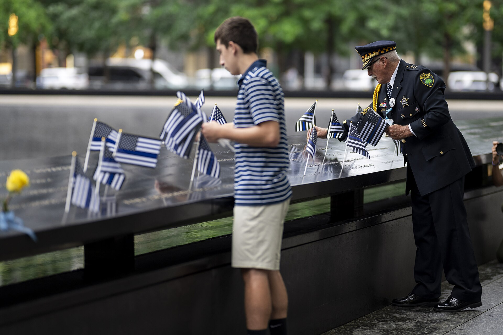

25 Years Since 9/11: The New York Ceremony and the Debate Over Muslim Americans
Four former presidents attended the memorial service at Ground Zero. The presence of Zohran Mamdani, the city's first Muslim mayor, drew debate of its own.

The United States marked the 25th anniversary of the 2001 terrorist attacks on Sept. 11, 2026. Former Presidents Joe Biden, Bill Clinton, Barack Obama and George W. Bush attended the main ceremony at the National September 11 Memorial plaza in New York, along with Vice President JD Vance.
Nearly 3,000 people were killed in the Sept. 11, 2001, attacks. As is traditional, relatives of the victims read the names aloud at the ceremony. A new element was added to the program this year: a separate moment of silence was observed for those who died of illnesses linked to the attacks.
Ceremonies at the Pentagon and Shanksville
President Donald Trump spoke at the ceremony held at the Pentagon, outside Washington. Interior Secretary Doug Burgum spoke at the event held near Shanksville, Pennsylvania, where the passengers of Flight 93 died.
Sept. 11 reminded us of the terrible power of hatred.
— Donald Trump, President of the United States (ceremony at the Pentagon)
The debate around Mayor Mamdani
Ahead of the ceremony, the attendance of New York's 34-year-old mayor, Zohran Mamdani, became a political controversy. The city's first Muslim and first Asian American mayor took office on Jan. 1, 2026.
Former Republican Gov. George Pataki, former Mayor Rudy Giuliani and a number of victims' relatives objected to his attending the ceremony. The objections pointed, among other things, to statements previously made by some of the mayor's political allies.
Mamdani confirmed he would attend and called the attacks a “horrific act of terror.” He said the focus of the ceremony should be on the victims' families, the first responders and the New Yorkers who helped one another.
During the ceremony, Mamdani approached Rudy Giuliani and shook his hand. The moment was caught on camera and widely discussed on social media.
A call from victims' families
Several participants who lost parents spoke out against division at the ceremony. Michael Massaroli, the son of one of the victims, warned against using the tragedy to spread hatred.
It is wrong, and it brings no honor to the victims here.
— Michael Massaroli, son of a 9/11 victim
A quarter century: what changed for Muslim Americans
Both official statistics and advocacy-group reports have documented a significant rise in hate crimes against Muslims in the years after the attacks. According to opinion polls, Sept. 11 still shapes how Americans view Muslims.
At the same time, Muslim Americans' participation in public life has widened over the quarter century: Muslim politicians have taken posts ranging from state legislatures to Congress to New York City Hall.
According to CAIR, a Muslim civil-rights organization, it received more than 8,500 complaints related to being targeted, harassed or attacked over the past year — the highest figure in the organization's history.
The context for the Central Asian diaspora
The New York metropolitan area is home to the largest community of migrants from Uzbekistan: the 2020 U.S. census recorded 53,374 people identifying Uzbek ancestry. Because a large share of the communities from Central Asia are Muslim, the debate over religious freedom and hate crimes in the U.S. bears directly on this audience.
How the ceremony runs
The New York memorial service follows the same order every year: relatives of the victims read the names in turn, with moments of silence announced in between to mark the key times of the attacks — the moments the planes struck and the towers fell.
An additional element was included in the program this year: a separate moment of silence was designated for those who died of illnesses linked to the attacks. Thousands of people who took part in the rescue and cleanup effort have suffered respiratory and cancer-related illnesses in the years since.
The ceremonies are held simultaneously in three places — in New York, at the Pentagon and near Shanksville, Pennsylvania.
A quarter century in statistics
Nearly 3,000 people were killed in the Sept. 11, 2001, attacks. The event brought long-term changes to U.S. domestic and foreign policy: new security agencies were created, aviation security rules were rewritten, and immigration and visa screening was tightened.
For Muslim communities, the period unfolded along two tracks. On one hand, hate-crime statistics rose sharply and additional screening practices were introduced. On the other, community organizations, legal aid networks and political representation expanded.
Political representation
Over the quarter century, Muslim Americans have taken seats in state legislatures, on city councils and in Congress. On Jan. 1, 2026, Zohran Mamdani took office as mayor of New York, becoming the city's first Muslim and first Asian American mayor.
The debate around his attendance at the ceremony showed that this representation remains a subject of controversy. Positions among victims' families were not uniform either: some objected, while others spoke out against using the tragedy for political ends.
For Central Asian communities
The New York metropolitan area is home to the largest community of migrants from Uzbekistan; the 2020 census recorded 53,374 people identifying Uzbek ancestry. Uzbek mosques, teahouses and community organizations operate in Brighton, Brooklyn and Queens.
A large share of the community works in the taxi and trucking sectors and in the hotel and construction industries. The makeup of the diaspora has broadened in recent years: an officially registered Uzbek community association was established in Seattle in July 2026.
For these communities, the debate over religious freedom, immigration policy and hate crimes has practical significance. According to CAIR, a Muslim civil-rights organization, it received more than 8,500 complaints over the past year — the highest figure in its history.
Public opinion
Polling results indicate that Sept. 11 still shapes how Americans view Muslims. Researchers note that this effect differs across generations: the figures are different among the younger generation, which has no memory of the attacks.
The memorial plaza
The National September 11 Memorial and Museum opened in 2011, on the 10th anniversary of the attacks. The memorial consists of two large pools set in the footprints of the two towers; the victims' names are inscribed on the bronze panels surrounding them.
The museum is located underground and holds materials documenting the history of the attacks. Over the years it has become one of the most visited museums in New York.
The role of religious organizations
On days of remembrance, religious communities across the United States — churches, synagogues and mosques — hold joint prayer and memorial events. Such joint services are a practice that took shape in the years after 2001.
Some Jewish community organizations issued statements against Islamophobia this year, noting that part of the criticism directed at the mayor was based on religious affiliation.
The ceremonies and the debate surrounding them revealed a two-sided situation for Muslim communities in America: on one hand, political representation has grown; on the other, participation in public life still becomes a subject of separate controversy.